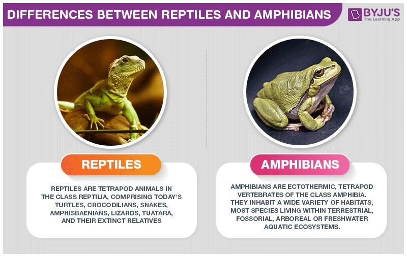
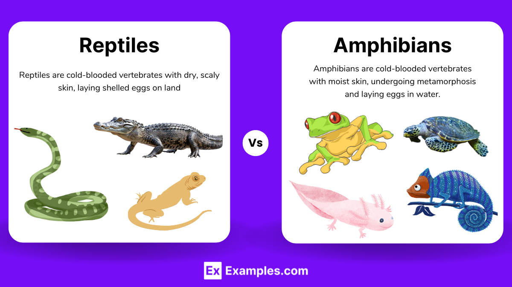
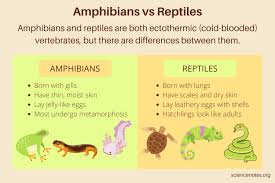

Reptiles are air-breathing, ectothermic (cold-blooded) vertebrates covered in scales or scaly skin, encompassing over 12,000 species. Found worldwide in various habitats, major groups include snakes, lizards, turtles, and crocodilians. The largest living reptile is the saltwater crocodile, while some dwarf geckos are among the smallest.
Amphibian are Amphibians are cold-blooded (ectothermic) vertebrates that live "double lives"—typically starting as aquatic, gill-breathing larvae and metamorphosing into air-breathing adults that live on land, though many stay near water. Key characteristics include moist, permeable skin used for respiration, four limbs (tetrapods), and a reliance on moist habitats.
Amphibians and reptiles are both cold-blooded vertebrates, but differ fundamentally in skin, reproduction, and lifecycle. Amphibians (frogs, salamanders) have moist, permeable skin, lay gelatinous eggs in water, and undergo metamorphosis. Reptiles (snakes, lizards, turtles) have dry, scaly skin, lay leathery, amniotic eggs on land, and breathe with lungs. Greater Cleveland Aquarium


